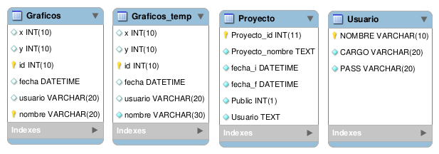
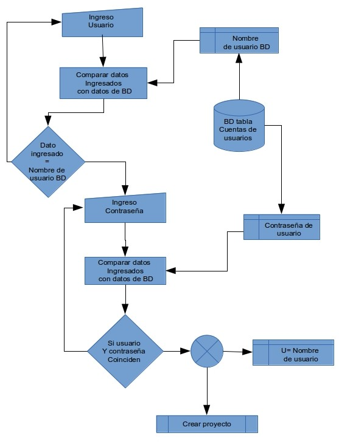

El
software de graficacion .
El
software utiliza una base de datos MySql. Su uso se aplica para
almacenar las coordenadas de los proyecto , nombre de proyecto ,
usuario, contraseña entre otros datos que se describirán mas adelante .
Para poder ejecutar el software se requiere :
GNU/Linux (Sistema Operativo)
Interfaz gráficas, preferentemente Gnome 3
gambas-rumtime 3 juntos a las siguientes librerías
gb.db > Este componente le permite acceder a varios sistemas
gestores de bases de datos.
gb.db.form> Este componente contiene controles enlazados a datos
(data-bound controls).
gb.db.mysql> Controlador de base de datos Mysql.
gb.form> Este componente provee un conjunto de controles mejorados.
Estos pueden ser usados indiferentemente con gb.qt o gb.gtk.
gb.gui >Este componente deberá cargar el componente gb.qt o el
gb.gtk, de acuerdo al escritorio que se este usando. Si estas usando
KDE, entonces gb.qt deberá se cargado.
En cualquier otro caso, gb.gtk deberá ser cargado
Mysql server v 5.7 .instalado junto a la base de datos del proyecto .
El software por el momento utiliza 6 Módulos y 8 clases entre ambos
suman mas 3300 lineas de código aprox. , y sumando a esto 8 formularios
de interfaz gráfica.
En este apartado se describirán los siguientes elementos :
I. Diagrama de su estructura .
II. Base de datos.
III. Diagramas de flujos de sus componentes principales .
IV. Impresiones de pantalla del software y descripción de sus elementos .
V. Control de acceso para el usuario y control de cuentas de usuario.
VI. Seleccionar proyecto o crear nuevo.
VII. Ventana de Principal o ventana de graficacion.
VIII. Descripciones elementales de funcionamiento.

➢ Para iniciar el software de graficacion se solicita una cuenta
de usuario , este es necesario para poder relacionar los gráficos con
autor propietario.
➢ Una vez ingresado se puede optar para seleccionar un proyecto ya
creado desde la Base de datos o de un archivo , o en su defecto crear
uno nuevo que se guardara automáticamente en la base de datos .
➢ Una vez después de haber abierto el achico . Se ingresa a la ventana
de graficacion en esta se podrá crear / editar el diseño de la figura
que se desee cortar en la plancha de telgopor-
Tablas de la base de datos

Control de acceso para el usuario.
Ingreso : Para ingresara por primera vez se utiliza una cuenta de
usuario . Por defecto es :
usuario ROOT, contraseña : ROOT.
Ingrese
su nombre de Usuario:
 Luego ingrese su Contraseña:
Luego ingrese su Contraseña:

Diagrama ingreso de usuario
Ingreso de Usuario

Abrir Proyecto existente
En este se puede seleccionar un proyecto de la base de datos , o
seleccionar uno de un archivo de extensión (.Cnc)
Formulario abrir proyecto:


(Figura 4. )
La lista que se muestra en
la imagen es una lista con los proyecto creados por el usuario
que ingreso y todos los proyectos declarados públicos que puedan
pertenecer a otro
usuario.
Al seleccionar de la lista se muestra nuevamente el nombre , fecha de
creación , fecha de
la ultima modificación .
Botón “Abrir “ Una vez seleccionado el proyecto, clic en abrir.
Si desea abrir un proyecto creado en un archivo “Abrir archivo ”
busque el archivo en la ventana de dialogo .
(Figura 4. )
Botón “Nuevo” cierra el formulario actual para abrir
el formulario Crear proyecto nuevo.
Crear un nuevo Proyecto
Al ingresar en esta opción , el usuario
puede crear un nuevo proyecto
.Ingresando un nombre para este , si se desea que el proyecto que pueda
ser visto y modificado por otros “Usuarios” cheque en la opción publico
.Haciendo clic en el botón “nuevo” se inicia un proceso que
automáticamente guardara en la base de datos nombre del usuario , fecha
de creación y nombre del proyecto, siguiendo de esta acción se abrirá
la interfaz principal, (interfaz de graficacion ). Las opciones “Abrir
proyecto existente ” permite volver a la interfaz anterior .
El botón “Borrar” permite eliminar un proyecto que se encuentre en la
base de datos.
Formulario “Nuevo proyecto ”.

Diagrama de flujos de los procesos anteriores.